問題與限制
WBS、任務、工時與議題分散在多份表格中，管理者不易追查任務進度與實際投入的關係。
ProjectFlow — 從實際 PMO 管理需求出發，獨立規劃並透過 AI 協作開發專案管理系統，以 C#、ASP.NET Core MVC 與 SQL Server 串連工作分解、任務、工時、議題及進度資料。
從實際專案管理中分散的 Excel、工時與議題追蹤需求出發，由我定義業務規則與資料關係，透過 AI 協作開發 ASP.NET Core / SQL Server 原型並持續驗證。
WBS、任務、工時與議題分散在多份表格中，管理者不易追查任務進度與實際投入的關係。
自行定義需求、資料結構及主要業務計算規則，使用 AI 協作完成 C#／ASP.NET Core 與 SQL Server 本機原型並測試。
以 Project → WBS → Task → Worklog 關聯建立資料流程；使用工時計算、加權進度與相依性檢查，並以自動化測試保護規則。
本機原型已有真實操作畫面，535／535 項測試通過；尚未部署或提供企業內部同仁使用，部分模組仍待全面驗收。
535 項測試為已執行的自動化測試證據，不代表所有模組均已達企業正式上線標準。
Track what matters across every workstream.
專案的進度、任務、工時、里程碑與異常事項常分散管理。當任務更新時，對應的 WBS 與整體進度如何一致計算？當成員新增工時後，資訊如何回到任務與專案層級？
ProjectFlow 以這些實務問題為起點，嘗試建立具備可追溯資料結構的單一工作空間。
以下為從本機執行的 ProjectFlow 擷取的實際功能畫面，搭配開發測試資料。前面的 UI 概念圖用於作品集視覺展示，以下圖片則用來證明已實作的介面及操作流程。
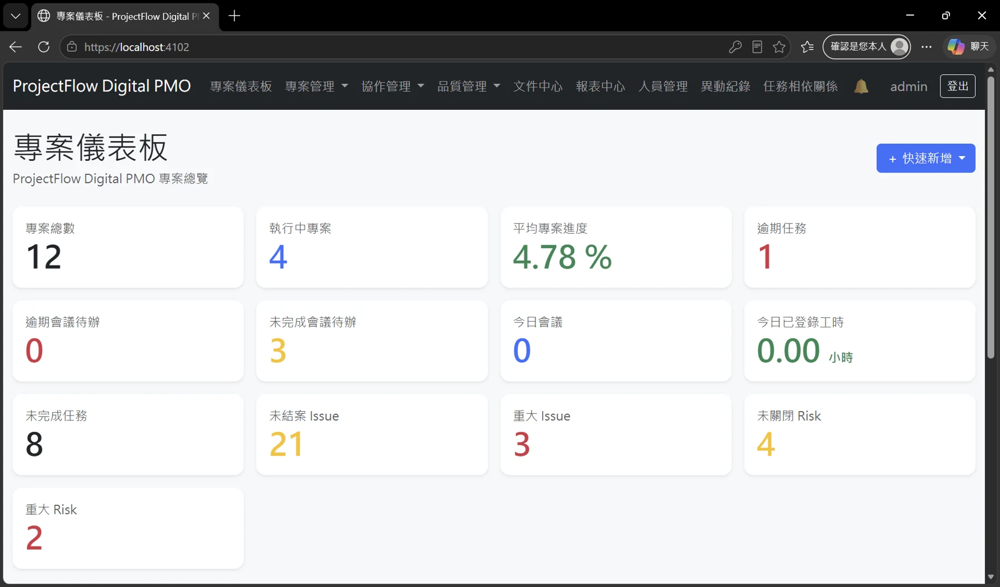
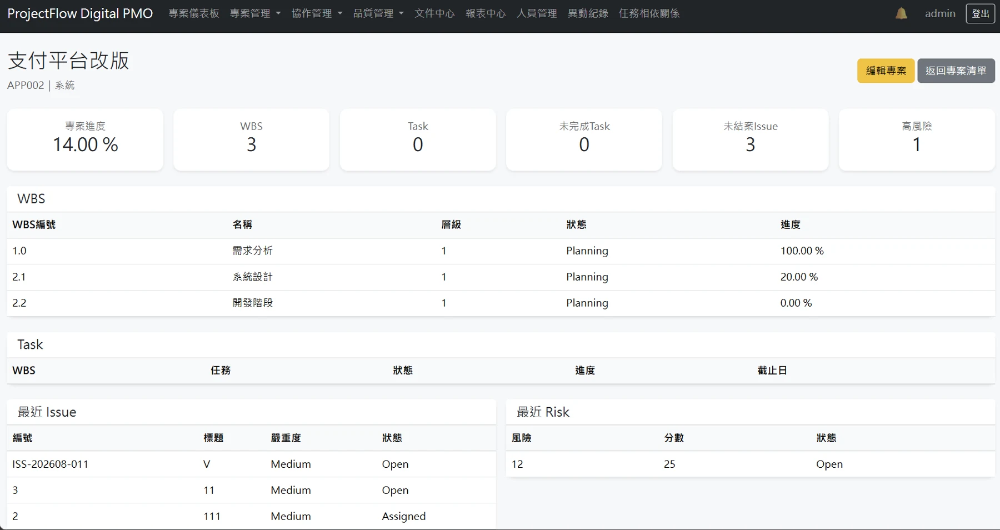
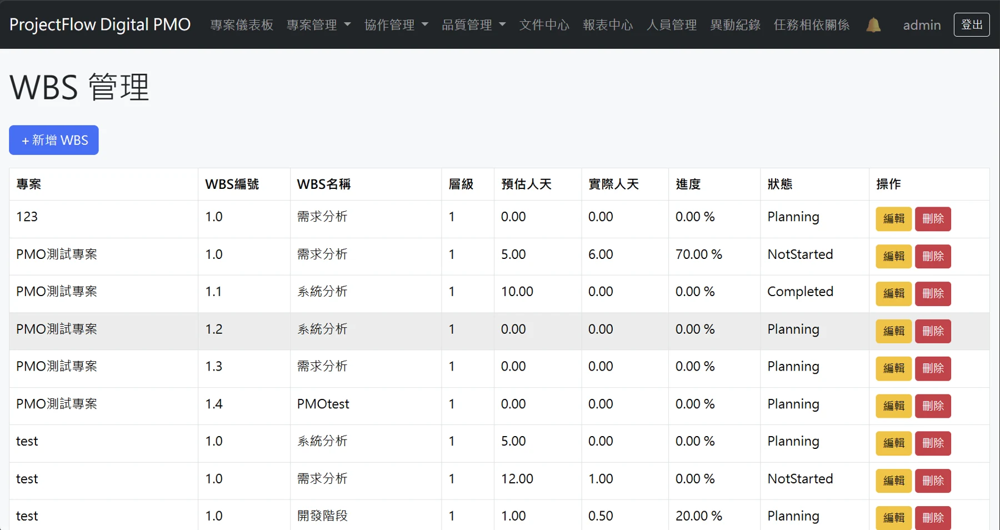
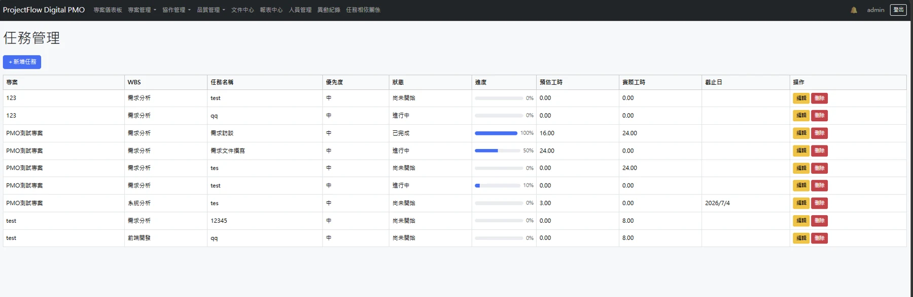
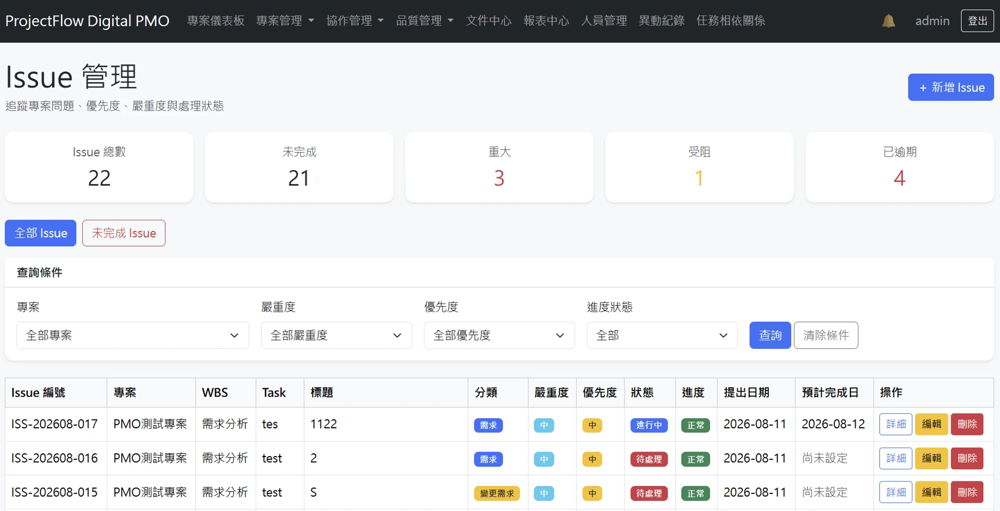
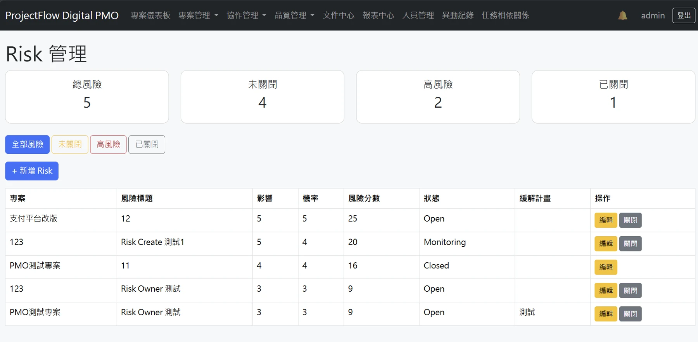
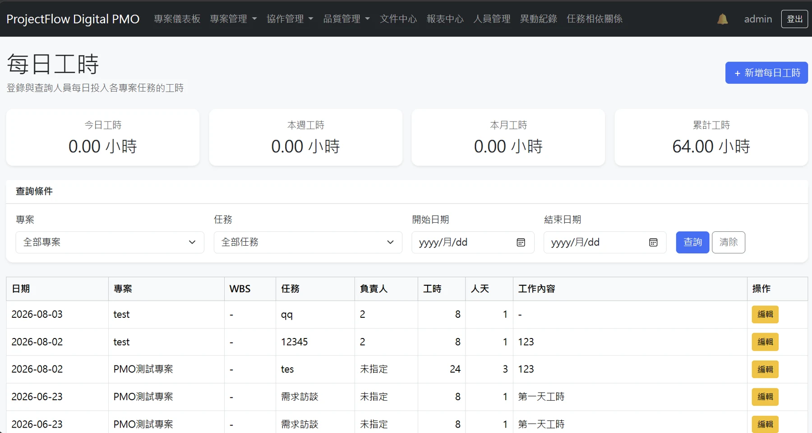
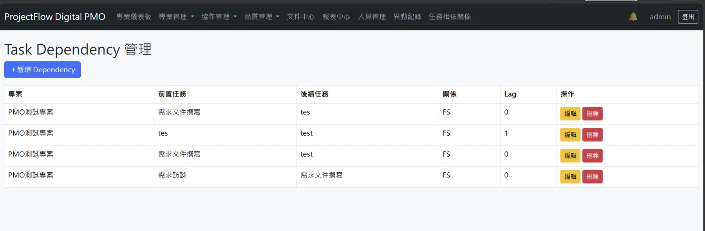
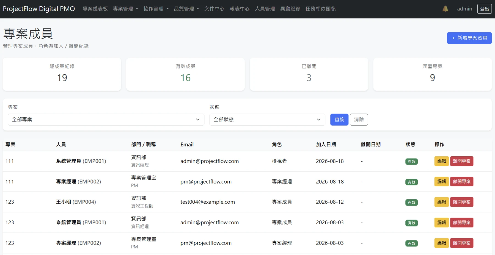
註：圖片為開發測試環境的真實截圖，內含示範或測試專案名稱及數據；不代表公司已部署、實際營運指標或生產環境的測試結果。
將專案、WBS、任務、工時、里程碑及風險管理需求拆分為可開發的功能模組。
規劃 Projects、WbsItems、ProjectTasks、Worklogs、Issues、Risks 等資料表及關聯。
以 AI 協作逐步實作 C#／ASP.NET Core MVC、EF Core 與 SQL Server；同步理解程式行為並驗證功能。
使用模擬資料驗證操作流程及計算邏輯，持續檢查跨專案驗證與資料彙整的一致性。
以下是依原始碼與模組規劃整理的簡化邏輯示意；不是部署環境的完整基礎架構。
Dashboard · Projects · WBS · Tasks
需求驗證 · 模組流程 · 資料存取
業務資料表 · Stored Procedures · Triggers
管理工作分解、任務關聯、負責人、進度與排程資訊。
將工時資料與任務、WBS、專案層級的彙整邏輯連接。
建立議題、風險及變更紀錄的管理流程與資料關聯。
逐步建立授權驗證及模組測試，提升系統可維護性。
依照這次提供的 ProjectFlow 原始碼（Dashboard、WBS、Tasks 的 Razor Views）整理欄位與介面結構，繪製公開展示用的概念畫面。與正式系統截圖不同，示例資料不代表實際營運或測試結果。
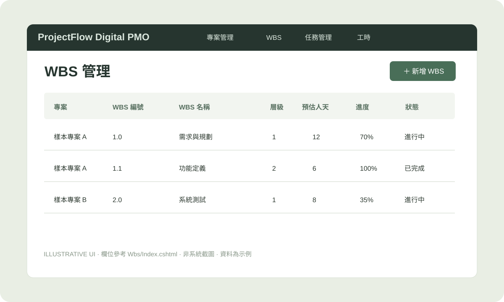
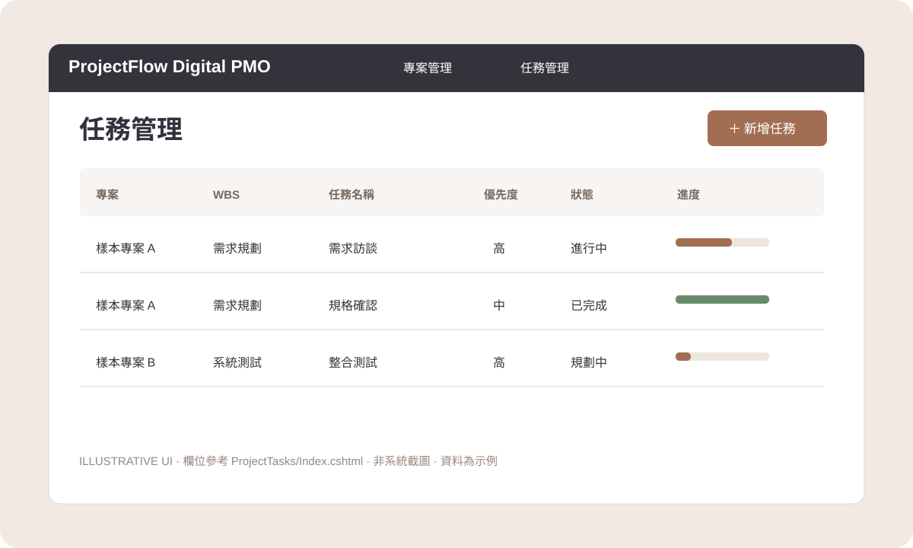
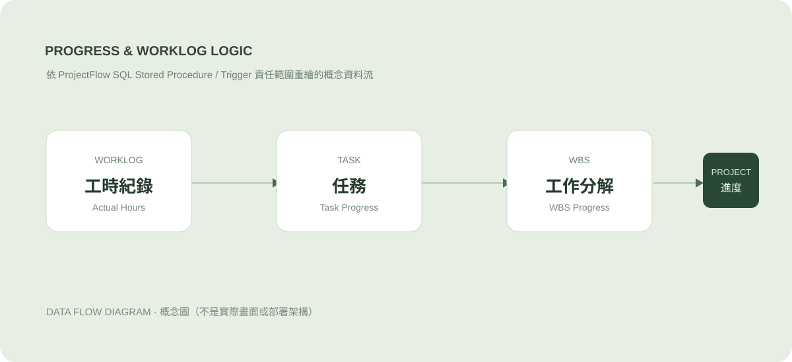
現有專案包含 MVC Controller / View、資料存取層、SQL 邏輯及多個單元測試檔案。
目前使用測試專案、人員及任務資料進行開發與功能驗證，尚未正式釋出或提供公司使用；2026/10/14 自動化測試 535/535 PASS，持續補充邊界情境驗證。
已整合 Dashboard、專案、WBS、Tasks、Issue、Risk、Worklogs、相依關係及成員管理的實際畫面，資料為測試用途。
作品狀態：個人開發中的 Prototype，非正式企業部署成果。設計示意圖採用虛構資料；實際截圖來自本機測試環境，其數字不代表營運績效。
Project、WBS、Task、Worklog、Dependency 的主要功能與對應業務規則已實作。
Issue、Risk、Members 已有實作，但尚未逐項完成最新一輪的完整功能驗收。
2026/10/14：535 項自動化測試全數通過（516 unit + 19 integration）；不表示所有使用情境已測完。
個人 AI 協作開發原型，尚未提供公司內部人員使用，也未正式部署至企業環境。
此作品重點是需求、資料關聯、業務規則、技術設計取捨及測試證據；不宣稱獨立手寫全部 C# 程式碼。
ProjectFlow 的出發點不是先建立畫面，而是把過去在多工作表管理 WBS、任務、人員與工時的經驗，轉換為明確的資料關係及業務規則。以下列出設計原則；實作完成度與最新版 SQL 仍須分別驗證。
採用 Parent–Child 結構，讓不同深度的工作分解共用同一套 WBS 資料模型。
主要規則：父子節點必須屬於同一專案；禁止自己成為父節點、形成循環，刪除前檢查相依資料。
WBS 負責組織工作範圍，Task 負責實際執行、指派、工時與進度。
主要規則：選定專案才載入對應 WBS；後端仍須防止竄改 Request 導致跨專案掛載。
規劃新增人員、修改角色、離開與重新加入，以及專案 PM 更換的確認機制。
主要規則：若已有 PM，先詢問是否更換，避免意外產生角色衝突。此處為初始業務流程規劃。
規劃由底層工時紀錄彙總 Task、WBS 和 Project 的管理資訊，避免每個 Controller 各自維護不同的計算邏輯。以下示範最初規劃的公式，不代表最新版 SQL 所有階層與邊界案例皆已完成驗證。
以每天填報的工時為唯一來源。例如 8 + 6 + 10 = 24 小時；按 8 小時換算為 3 人天。
若任務 A 為 80h／50%，任務 B 為 20h／0%，加權進度為 40%，而不是直接平均的 25%。
注意：實際工時彙總與進度加權是不同規則；投入 24 小時不代表工作進度自動達到 100%。父子 WBS 的遞迴加權與零權重處理，以最終 SQL 驗證結果為準。
這是個人透過 AI 協作開發的學習型專案。我熟悉專案管理場景與 SQL 資料邏輯，但 C#／ASP.NET Core 是開發過程中逐步理解的技術；不將自己描述為資深 C# 工程師，也不把 AI 產生的程式碼宣稱全部親自手寫。
由我提出 WBS 階層、Task 歸屬、角色轉換、工時及進度規則與預期操作流程。
藉由 AI 協助產生、解釋與修改 MVC、C#、EF Core 和 SQL 實作，反覆對照規格調整。
使用假資料操作介面、核對資料關聯與計算結果，回饋問題並持續測試與修正。
以 .NET 8 / xUnit 執行自動化測試，並以實際操作及 SQL 結果核對 Task → WBS → Project 的加權進度。兩份 TRX 測試報告已核對，均無失敗或未執行項目。
*單層 WBS 進度範例；尚不代表已驗證父子 WBS 遞迴。535/535 是此次自動化測試通過數量，不等於 100% 程式碼覆蓋率或正式環境部署。測試摘要已整理於本頁；完整測試執行檔與內部紀錄不隨公開網站發布。
以資料庫計算維護實際工時與進度，降低不同頁面重複運算的不一致風險。
開發期間曾回報整合測試並行執行出現 SQL Server deadlock；TRX 僅能證明調整後這次測試全數通過，不能單獨證明既往失敗原因。
針對 Worklog 測試採用 xUnit collection 管理並行執行；保留 SQL 更新責任、鎖定行為與效能的後續檢查。